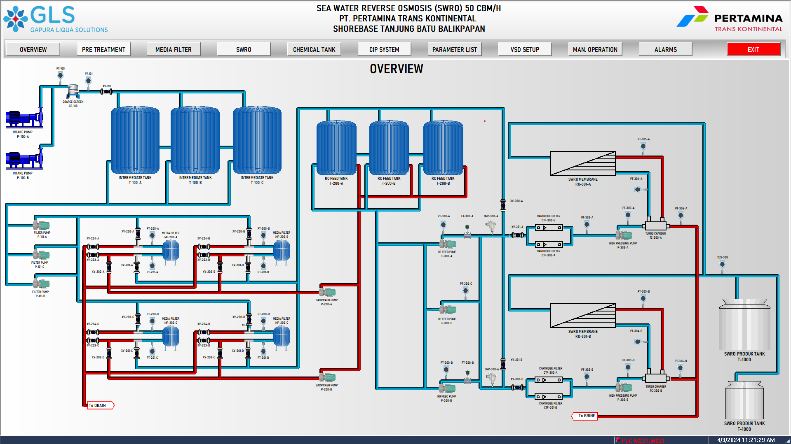

Portofolio Proyek Terpilih
Menampilkan keberhasilan implementasi teknis dan dampak bisnis yang nyata.
 >
>
Pengembangan Gas Detector Early Warning System (EWS)
Industrial Control System Project
Situation: Kebutuhan penguatan aspek HSSE pada fasilitas Pertamnia Patra Niaga untuk mendeteksi potensi kebocoran gas berbahaya secara dini dan real-time.
Action: Merancang arsitektur perangkat keras sistem interlock gas detector, melakukan wiring panel kontrol, memprogram logika PLC, serta mengintegrasikan sinyal alarm ke sistem monitoring terpusat.
Result: Menghasilkan sistem peringatan dini otomatis yang andal, meminimalisir risiko kecelakaan kerja, dan memastikan kepatuhan penuh terhadap regulasi keselamatan kerja industri.

Aktivitas Komisioning & Handover Sistem Fasilitas Industri
Project Engineer | Fasilitas Pertamina Patra Niaga
Situation: Memastikan seluruh instalasi sistem kontrol baru di area operasional Pertamina Patra Niaga berfungsi sesuai standar spesifikasi sebelum diserahterimakan kepada klien.
Action: Mengawal proses dari tahap tinjauan desain awal, inspeksi pengabelan, uji fungsi sinyal input/output (I/O testing), hingga pengujian performa akhir bersama tim teknis klien.
Result: Proyek berhasil diselesaikan dengan catatan zero accident dan diserahterimakan (client handover) secara mulus dengan pemenuhan standar kualitas yang ketat.
 >
>
Implementasi Komunikasi Modbus RTU/TCP pada Sistem Monitoring E-RTG
Project Engineer | PT Terminal Peti Kemas Surabaya (PELINDO)
Situation: Sistem monitoring energi E-RTG memerlukan integrasi data dari power meter agar parameter kelistrikan dapat dipantau secara terpusat.
Action: Melakukan konfigurasi komunikasi Modbus RTU/TCP antara PLC dan power meter, melakukan pengujian komunikasi, pemetaan register (register mapping), serta verifikasi akurasi data sebelum diintegrasikan ke sistem monitoring.
Result: Sistem monitoring berhasil menerima data kelistrikan secara real-time sehingga meningkatkan visibilitas kondisi operasional dan mendukung proses analisis konsumsi energi.

Pengembangan Sistem Monitoring SCADA CIMON pada Fasilitas SWRO
Project Engineer | PT Pertamina Trans Kontinental
Situation: Proyek pembangunan fasilitas Sea Water Reverse Osmosis (SWRO) membutuhkan sistem SCADA untuk mengintegrasikan seluruh proses pengolahan air.
Action: Bertanggung jawab dalam perancangan arsitektur SCADA CIMON, pengembangan tampilan HMI, konfigurasi komunikasi PLC, integrasi alarm dan historical data, serta melakukan pengujian dan commissioning sistem.
Result: Sistem SCADA berhasil diimplementasikan dan beroperasi sesuai kebutuhan operasional, memungkinkan pemantauan proses secara real-time serta meningkatkan efisiensi pengawasan fasilitas. (client handover) secara mulus dengan pemenuhan standar kualitas yang ketat.

Optimasi Kontrol Tekanan pada Konveyor Pneumatik Menggunakan Metode PID
Riset Tugas Akhir | Institut Teknologi Sepuluh Nopember
Situation: Proses transportasi gandum pada industri pengolahan tepung (Mill E) membutuhkan stabilitas tekanan udara yang tinggi untuk mencegah penyumbatan pipa dan boros energi.
Action: Merancang pemodelan kendali otomatis, memprogram algoritma kontrol PID ke dalam PLC untuk mengatur tekanan secara presisi, serta melakukan analisis kestabilan respon transien.
Result: Berhasil mengoptimalkan stabilitas sistem, menghasilkan potensi penghematan konsumsi energi hingga 9% , serta sukses memublikasikan karya riset ini di lingkungan akademik ITS.
Troubleshooting & Restorasi Logika Pasca-Overhaul Palletizer Robot
Industrial Automation Project
Situation: Sistem kontrol pada mesin Palletizer Robot mengalami disfungsi logika pasca-aktivitas overhaul kritis yang melibatkan pihak vendor dari china.
Action: Memimpin investigasi gangguan (troubleshooting) secara mendalam melalui teknik advanced PLC diagnostics serta menjembatani komunikasi teknis lintas fungsi dengan pihak vendor luar negeri.
Result: Sukses memulihkan logika kontrol dan fungsi komunikasi mesin secara total.
Modifikasi Sistem Elektrikal Mesin & Eliminasi Breakdown SSR
Electrical Engineer - R&D | Filtrona
Situation: Terjadi kerusakan hubungan singkat (short-circuit) berulang pada komponen Solid State Relay (SSR) di 9 mesin manufaktur filter yang memicu tingginya nilai waktu henti operasional.
Action: Melakukan penelusuran eror kelistrikan menggunakan skema pengabelan (wiring diagram) dan diagnostik PLC. Mengidentifikasi masalah pelepas panas (heatsink), kemudian merancang dan mengeksekusi modifikasi pemasangan heatsink baru.
Result: Berhasil mencetak status nol kerusakan terkait SSR selama lebih dari 5 bulan berturut-turut serta memangkas nilai downtime mesin hingga 25% .
Pengalaman Profesional & Pendidikan
Pengalaman Kerja
Electrical Engineer - R&D
Filtrona, Sidoarjo | Jan 2026 - Sekarang
Fokus pada manajemen perawatan preventif ( preventive maintenance ), inspeksi dan penggantian suku cadang elektrikal, modifikasi sistem kontrol mesin manufaktur filter, serta optimalisasi durasi pemecahan masalah gangguan kelistrikan pabrik.
TPM - Engineer
PT Sari Enesis Indah, Bogor | Nov 2025 - Jan 2026
Melakukan pemrograman ulang logika kontrol PLC ( reprogramming ), modifikasi antarmuka HMI untuk kemudahan operasional operator, serta penerapan pilar Total Productive Maintenance (TPM) demi meningkatkan efisiensi dan keandalan mesin produksi FMCG.
Pendidikan & Validasi Kompetensi
B.A.Sc. dalam Teknik Elektro Otomasi
Institut Teknologi Sepuluh Nopember (ITS), Surabaya | Lulus Aug 2025
IPK: 3.49 / 4.00
Sertifikasi & Lisensi Industri:
-
✓
Sertifikasi PLC Programming – BNSP
Validasi keahlian pemrograman standar nasional untuk sistem kendali logika industri.
-
✓
LOTO (Lockout-Tagout) Safety Training
Kualifikasi prosedur isolasi energi berbahaya demi keselamatan penuh saat perawatan mesin.
-
✓
HSSE Passport Qualification
Standar kompetensi aspek keselamatan, kesehatan kerja, lingkungan, dan keamanan di industri berisiko tinggi.
Kepemimpinan & Aktivitas
Technical Judge – World Robot Olympiad (WRO)
Skala Internasional | Apr 2023 - Aug 2023
Melakukan evaluasi performa teknis, pengujian logika sistem mekanik serta penilaian kepatuhan kriteria skor terhadap lebih dari 50 peserta divisi senior pada kompetisi robotika internasional.
Staff of Student Welfare Division – Himpunan Mahasiswa DTEO ITS
Organisasi Kampus | Jan 2024 - Dec 2024
Mengoordinasikan program beasiswa kesejahteraan serta pengembangan kapasitas akademik yang berdampak positif bagi lebih dari 100 mahasiswa Teknik Otomasi Kelistrikan.
Head of LEGO Competition Division – Robokidz Robot Olympiad (RRO)
Kompetisi Regional | Aug 2022 - Feb 2023
Memimpin manajemen teknis dan mengoordinasikan jalannya perlombaan robotika kategori LEGO yang diikuti oleh lebih dari 25 tim peserta anak-anak/remaja.